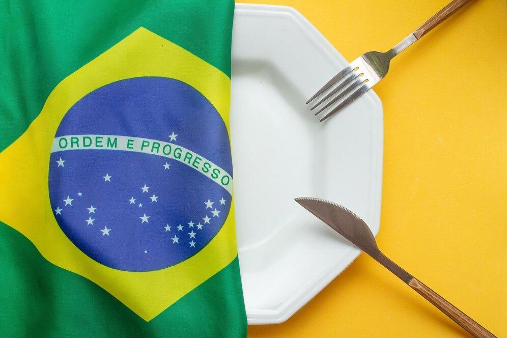

O estrogonofe (ou strogonoff) é um prato russo que se espalhou pelo mundo e caiu no gosto do brasileiro.
Embora existam diversas teorias sobre sua origem, assim como mencionamos, a mais reconhecida é a de ser uma
criação de um chef francês que trabalhava para a família russa Stroganov (ou Strogonov).
Aliás, as famílias russas mais ricas e poderosas em geral apreciavam a cultura francesa. Muitas inclusive
possuíam apartamentos em Paris, mandavam seus filhos e filhas para escolas francesas, tinham funcionários
franceses, além, é claro, de renomados chefs franceses.
A teoria conta que o estrogonofe surgiu devido aos problemas dentários que o Conde Grigory Stroganov tinha nos
anos 1700. Portanto, o chef francês do palácio da família decidiu adaptar uma clássica receita francesa, o
fricassé de boeuf (fricassé de carne), cortando a carne em pequenas tiras e a misturando com creme de leite
para facilitar a ingestão da comida.
Apesar de também existir uma história de que o nome do prato venha da palavra “strogat”, que significa
“cortar” em russo, a ideia de que o estrogonofe foi batizado por conta da família prevalece.
Hoje em dia, o palácio da família Stroganov está conservado e faz parte dos museus estaduais de São
Petersburgo, na Rússia. Mas foi a receita de estrogonofe que imortalizou o nome da família.
À época, levava apenas carne passada levemente na farinha, mostarda dijon, caldo de carne e um pouco de sour
cream (creme azedo). O arroz e os cogumelos vieram depois, com a chegada do prato na China. A batata palha,
por sua vez, é um extra dos brasileiros. Na Rússia, é servido com purê de batata.
